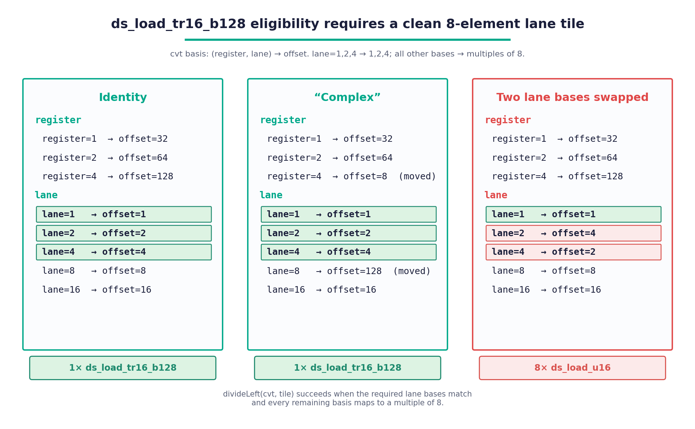
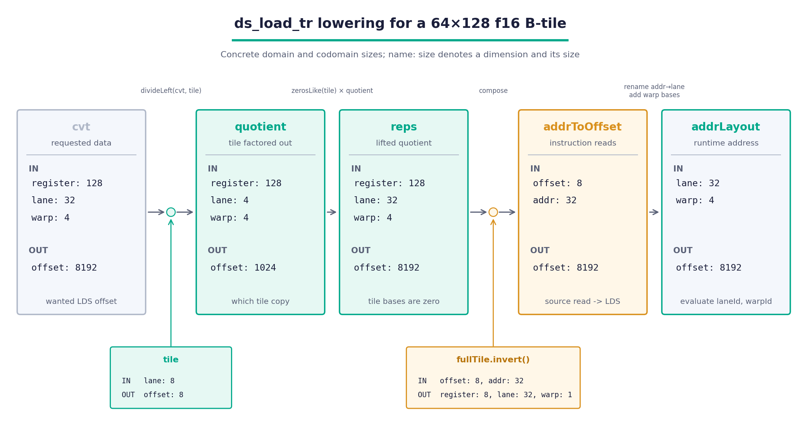

（正文首图，无 figure）
（正文首图，无 figure）fig01.webp

fig02.png

fig03.png

fig04.png

fig05.png

fig06.png

fig07.png

fig08.png

fig09.png

fig10.png

fig11.png

fig12.png

fig13.png

fig14.png

fig15.png

fig16.png

fig17.png
| H1 | AMD Instinct MI450 GPU上的LDS优化深度解析 |
| 图 | （正文首图，无 figure） fig01.webp |
| H2 | linear layout回顾 |
| H3 | 基本思路 |
| H3 | layout的除法：一条指令如何在tile上重复 |
| H2 | 第一部分：转置LDS加载 |
| H3 | 为什么重要？ |
| H3 | ds_load_tr做什么？ |
| 图 | fig02.png |
| 图注 | 图1a： ds_load_tr16_b128 的32x8 tensor归属示意图。左侧显示每个源lane S读取的八个元素；右侧显示四次独立8x8转置后每个目标 |
| 图 | fig03.png |
| 图注 | 图1b： ds_load_tr8_b64 的32x8 tensor归属示意图。与 ds_load_tr16_b128 使用的连续分组不同，每个源组由两段各四个l |
| 图 | fig04.png |
| 图注 | 图2a：完整的16-bit WMMA B-operand tile的gfx1250 lane归属。每个16x16 panel对应一条 ds_load_tr16_ |
| 图 | fig05.png |
| 图注 | 图2b：完整的8-bit WMMA B-operand tile的gfx1250 lane归属。每个16x16 panel对应一条 ds_load_tr8_b6 |
| 图 | fig06.png |
| 图注 | 图3： ds_load_tr 不要求source地址描述某个几何tile的行。每个lane提供独立的LDS地址，指令则对所选向量应用相同的固定跨lane重分布。 |
| H3 | 在Triton中把local_loadlower为ds_load_tr |
| 图 | fig07.png |
| 图注 | 图4a：从图2a中的一个 fullTile 所有权面板（ownership panel）读取b16 ds_load_tr16_b128 。每个逻辑元素将一个目标 |
| 图 | fig08.png |
| 图注 | 图4b：对图2b中一个 ds_load_tr8_b64 ownership panel做同样的采样。lane和register base以不同顺序分配给 add |
| 图 |  fig09.png |
| 图注 | 图5： ds_load_tr16_b128 的合格性约束 cvt 的前3个lane base，即由destination layout与shared layou |
| 图 |  fig10.png |
| 图注 | 图6： divideLeft 成功后使用的layout流水线。商（quotient）移除base tile ， reps 将其放置位置提升回原始offset空间 |
| H3 | 关键要点 |
| H2 | 分区冲突（Partition Conflicts） |
| 图 | fig11.png |
| 图注 | 图7：单个MI450 Workgroup Processor的LDS数据通路：两个SIMD pair都送入共享的LDS/L0仲裁器，其两个端口可到达全部六个硬件 |
| H3 | 分区冲突的判定规则 |
| H3 | 标准WMMA layout为何产生冲突 |
| 图 | fig12.png |
| 图注 | 图8：在默认 warpsPerCTA = [2, 2] layout下，每个M-row由一个Pair A warp和一个Pair B warp共享。 |
| H3 | 将CTA Layout表示为Linear Layout |
| 图 | fig13.png |
| 图注 | 图9：采用swizzle后的layout，所有Pair A warp占据一组M-row，所有Pair B warp占据另一组互不相交的M-row。A上的跨pai |
| H3 | 当ctaLayout不够时：PartitionedSharedLayout |
| 图 | fig14.png |
| 图注 | 图10：swizzle后的 ctaLayout tile在C上重复，每种颜色标记一条指令在全部四个warp上计算的tile。A沿M切成 2 x 2 = 4 个p |
| H3 | 选择ctaLayout以减少TDM流量 |
| 图 | fig15.png |
| 图注 | 图11：让每个warp跨越四tile条带可得到更大、更少的piece。颜色同样标记每条指令计算的tile。Operand A不变（四个 [32, K] piec |
| H3 | partition保证如何落实：partition感知的分配 |
| 图 | fig16.png |
| 图注 | 图12：Stage-1放置不断增大搜索高度，直到每个partition buffer找到与其已放置neighbor不冲突的partition。 |
| H3 | partitioned local load如何lower |
| 图 | fig17.png |
| 图注 | 图13：partitioned shared layout增加一个 partition 输出维度。将其与distributed layout复合得到 cvt: |
| H3 | 度量：LDS带宽微基准测试 |
| H3 | 关键要点 |
| H2 | 总结 |
| H2 | 其他资源 |
| H2 | 免责声明 |